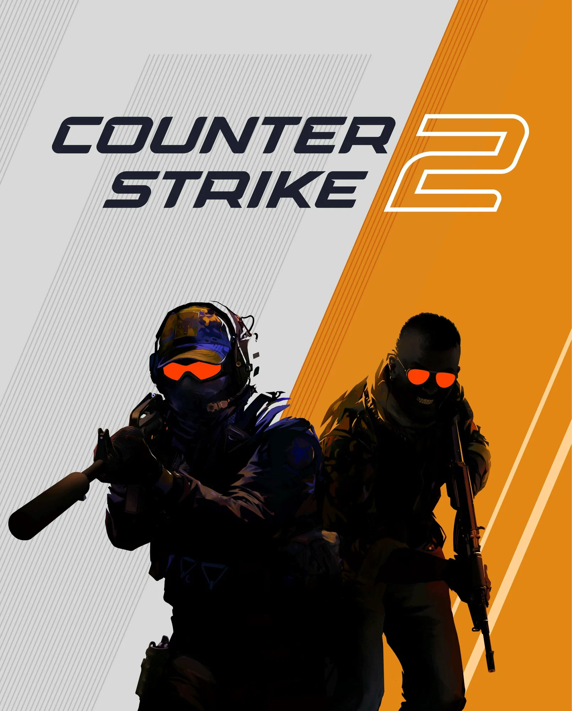

Основные версии игры
- Counter-Strike 1.6 — классическая версия, выпущенная в 2003 году. Она до сих пор популярна среди фанатов серии. Подробнее о CS 1.6 можно узнать на Wikipedia.
- Counter-Strike: Source — обновленная версия на движке Source, выпущенная в 2004 году. Графика и физика были значительно улучшены. Официальная страница в Steam: CS: Source.
- Counter-Strike: Global Offensive (CS:GO) — современная версия, выпущенная в 2012 году. CS:GO стала самой популярной версией игры, с регулярными обновлениями и поддержкой киберспорта. Официальная страница в Steam: CS:GO.

Counter-Strike 2
В 2023 году Valve анонсировала Counter-Strike 2 — новую версию игры на движке Source 2. Полностью игра вышла в сентябре 2024 года и по сей день имеет огромный онлайн. На данный момент в игре стабильно выходят обновления в основном исправление. Подробнее о CS2 можно узнать на официальном сайте.
